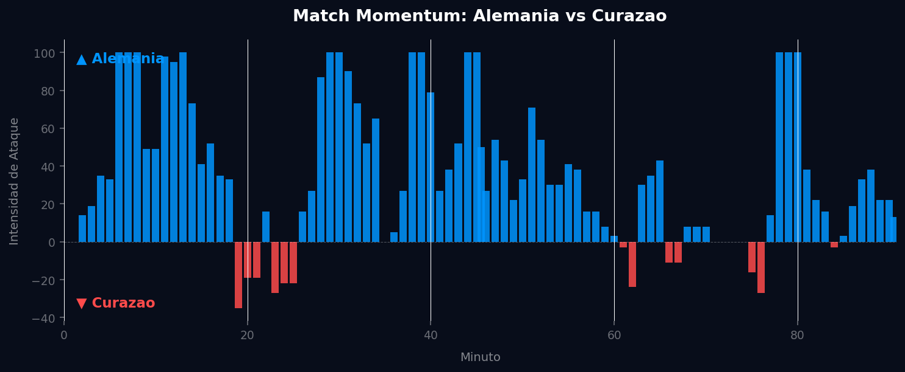

Grupo E
 Curazao
Curazao
Alemania vs Curazao
📅 2026-06-14 · 🕒 12:00 (Local)
Alemania

7 - 1
FINALIZADO
Curazao
📅 2026-06-14 · 🕒 12:00 (Local)
Curazao
Alemania firmó un debut arrollador con una goleada histórica de 7-1 sobre Curazao, ratificando su inmensa superioridad táctica y volumen de juego. La red de pases teutona funcionó con precisión quirúrgica, liderada por Toni Kroos y Joshua Kimmich, alimentando a un ataque insaciable que generó 34 disparos frente al arco rival. El extremo derecho y el callejón central fueron avenidas libres para las constantes conducciones progresivas alemanas. A pesar del abrumador dominio germano, Curazao logró un hito al marcar un gol de honor a través de una transición rápida conducida por Bacuna y finalizada en el área, demostrando la eficacia del 16% que el modelo pre-partido ya advertía. Sin embargo, la acumulación de faltas de Curazao cerca de su propia área facilitó el asedio de una Alemania implacable.
La Selección Alemana estableció una dinámica de juego hegemónica desde el pitido inicial, materializando su pico de intensidad ofensiva (100.00 en el minuto 6) en una rápida sucesión de ocasiones claras y goles, asegurando una ventaja temprana. La respuesta de Curazao, limitada a un pico de intensidad de 35.00 en el minuto 19, solo representó un breve respiro sin generar peligro prolongado ni alterar la tendencia del encuentro. El sostenido liderazgo alemán en intensidad (77.7% del partido) frente a la mínima injerencia ofensiva de Curazao (13.8%) subraya un dominio total en la posesión y en los momentos clave de ataque. Esta abrumadora disparidad en el flujo de intensidad y el control táctico constante explican directamente el marcador final de 7-1, reflejo de una superioridad de ejecución y capacidad ofensiva ininterrumpida.

El mapa de calor de Alemania muestra un dominio territorial enorme: ocupan casi todo el ancho y largo del campo, con dos núcleos de actividad muy marcados a la altura del círculo central, lo que indica que controlan el balón en zonas de generación de juego y empujan constantemente hacia el área rival. La red de pases confirma esa idea de equipo con el balón: hay una enorme concentración de circulación entre Kimmich, Kroos, Tah y Rüdiger, quienes conectan con jugadores de banda y ataque como Wirtz, Musiala, Groß, Gündoğan, Sané, Havertz y Müller. Es una estructura muy vertical y conectada, propia de un equipo que progresa el balón con criterio.
El mapa de amenaza esperada (xT) refuerza esto: la mayor generación de peligro aparece concentrada en el último tercio, sobre todo por el costado derecho del ataque, zona desde la que parecen llegar las jugadas más peligrosas. El mapa defensivo es otro punto fuerte: las acciones de presión, recuperación e intercepción están distribuidas por todo el campo, incluso muy adelantadas, señal de un bloque que presiona alto y recupera rápido tras pérdida. El mapa de conducciones progresivas es abrumador en volumen, con decenas de carreras de más de 10 metros que llevan el balón hacia el último tercio, especialmente del centro hacia la derecha.
En cuanto a finalización, el mapa de tiros y asistencias muestra 84 disparos y 11 goles, con un volumen de remates altísimo concentrado dentro y cerca del área pequeña, además de varias asistencias que llegan desde banda derecha y desde el medio campo.
El mapa de calor de Curazao cuenta otra historia: la actividad se concentra mucho más en su propio campo y en zonas intermedias, con muy poca presencia en el último tercio rival, lo que sugiere un equipo que pasa gran parte del partido replegado. La red de pases es reveladora por su simplicidad: prácticamente todo pasa por el portero (Boom) lanzando balones largos hacia un grupo reducido de jugadores ofensivos (Bacuna, Janga, Galida), sin apenas circulación intermedia. Es un patrón típico de equipo que renuncia a construir desde atrás y busca el juego directo o las transiciones rápidas.
El mapa de xT de Curazao muestra muy poca generación de peligro sostenida, salvo un par de zonas puntuales con valores altos —probablemente acciones aisladas de mucho impacto— rodeadas de un mar de celdas prácticamente sin actividad. El mapa defensivo confirma el bloque bajo: la inmensa mayoría de presiones, duelos, entradas e intercepciones ocurren en su propio tercio defensivo y zona central baja, con muy poca actividad en campo rival, y se observan también varias faltas cometidas en zonas peligrosas.
Lo más llamativo es el mapa de tiros: 83 disparos y 13 goles, una efectividad de conversión incluso superior a la de Alemania (cerca del 15-16% frente al 13% alemán). Esto sugiere que, aunque generan menos volumen de juego elaborado, cuando consiguen llegar al área lo aprovechan bien, incluyendo algún gol desde fuera del área.